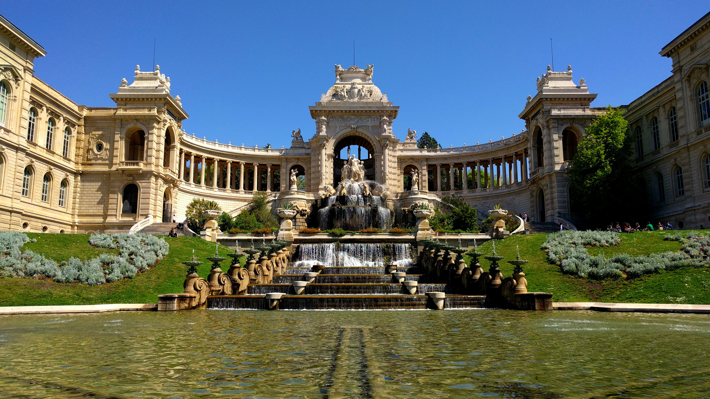
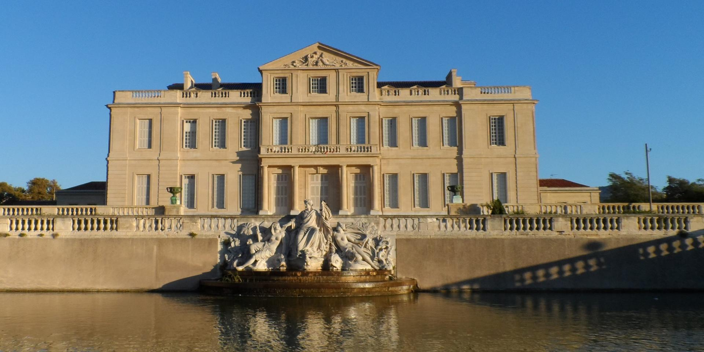
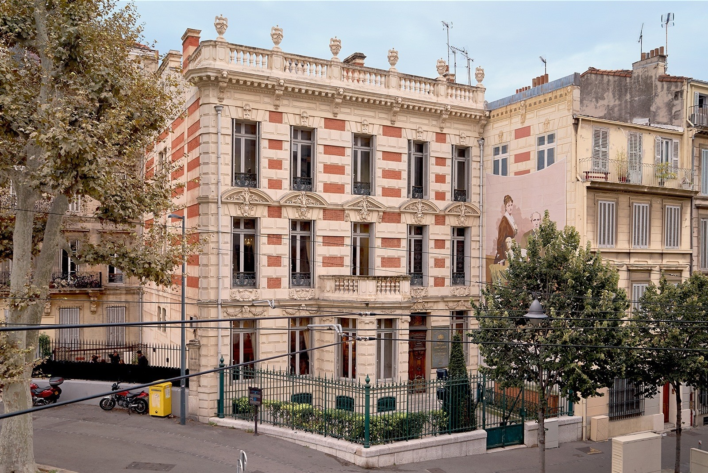
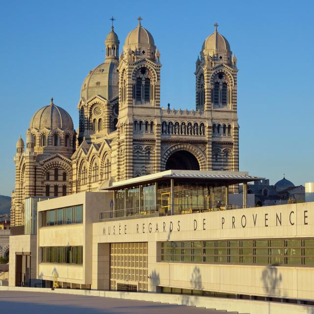

Musée des Civilisations de l'Europe et de la Méditerranée (MuCEM)
Un musée emblématique, le MuCEM, situé entre le Vieux-Port et le quartier historique du Panier, met en lumière les cultures méditerranéennes à travers des expositions innovantes.


Un musée emblématique, le MuCEM, situé entre le Vieux-Port et le quartier historique du Panier, met en lumière les cultures méditerranéennes à travers des expositions innovantes.
Ce musée retrace l'histoire de la ville depuis ses origines antiques jusqu'à nos jours, offrant une plongée captivante dans l'évolution de Marseille à travers les âges.

Détenteur d'une riche collection d'art moderne, le musée Cantini expose des œuvres de grands artistes du 20ème siècle, français et étrangers.

Logé dans un superbe édifice du XIXe siècle, ce musée présente une remarquable collection d'art européen, comprenant des œuvres allant du 16ème au 19ème siècle.
Le MAC est dédié à l'art contemporain national et international, offrant une vitrine sur les tendances artistiques les plus actuelles.

Niché dans un château du XVIIIe siècle, ce musée propose des expositions sur les arts décoratifs, le mode de vie provençal et l'art de la faïence.
Un musée des arts décoratifs et de l'art décoratif provençal du 18ème siècle, dans un somptueux hôtel particulier du Vieux-Port.
Un lieu multifonctionnel abritant musées, expositions, et manifestations culturelles dans un superbe bâtiment du XVIIe siècle.

Un musée dédié à l'histoire et aux traditions locales, mettant en avant la culture et l'artisanat provençal.

Axé sur l'art moderne et contemporain provençal, ce musée propose des expositions diverses illustrant l'identité culturelle régionale.
